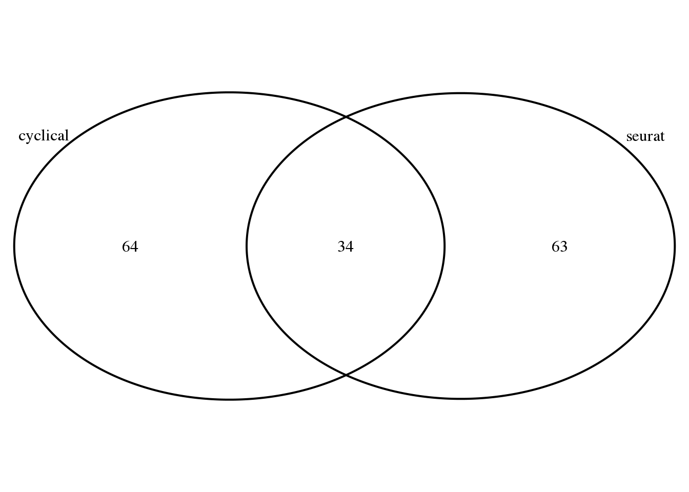
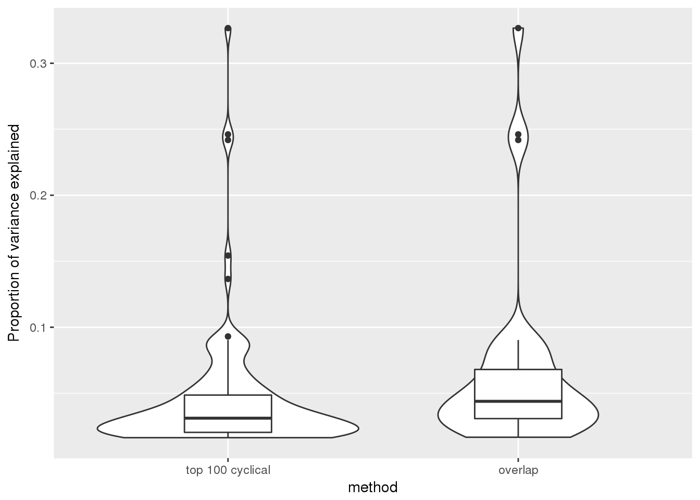
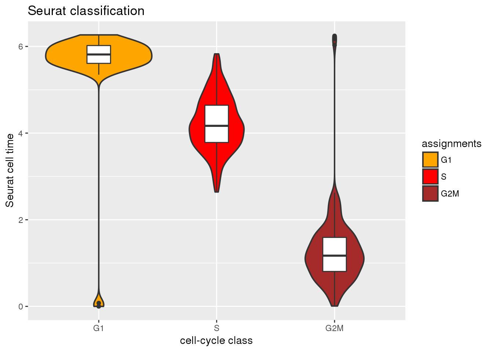
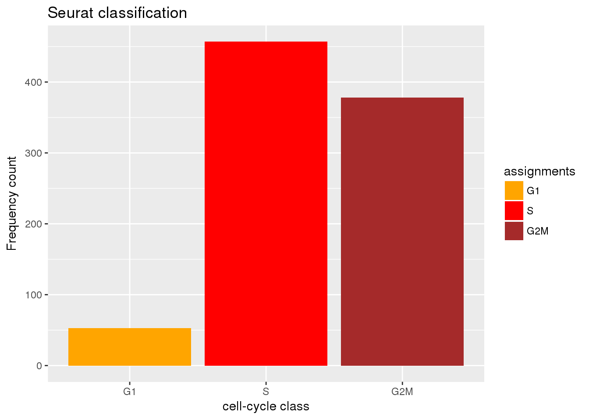
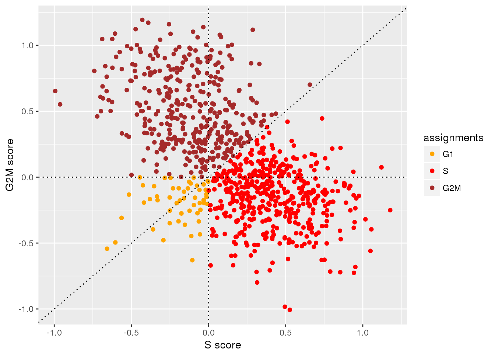

Last updated: 2018-06-29
Code version: 7cf2011
Compute seurat cell time using seurat S score and G2M score. Take the arctangent transformation of these two scores.
Evaluate the association between Seurat classes and cell times with DAPI, GFP and RFP.
Consider all of the 888 samples included in the analysis.
library(Biobase)
df <- readRDS(file="../data/eset-final.rds")
pdata <- pData(df)
fdata <- fData(df)
# select endogeneous genes
counts <- exprs(df)[grep("ENSG", rownames(df)), ]
log2cpm.all <- t(log2(1+(10^6)*(t(counts)/pdata$molecules)))
#macosko <- readRDS("data/cellcycle-genes-previous-studies/rds/macosko-2015.rds")
counts <- counts[,order(pdata$theta)]
log2cpm.all <- log2cpm.all[,order(pdata$theta)]
pdata <- pdata[order(pdata$theta),]
sig.genes <- readRDS("../output/npreg-trendfilter-quantile.Rmd/out.stats.ordered.sig.101.rds")
#expr.sig <- log2cpm.quant.valid[rownames(log2cpm.quant.valid) %in% rownames(sig.genes), ]
library(biomaRt)
ensembl <- useMart("ensembl",dataset="hsapiens_gene_ensembl")
symbols <- getBM(attributes=c('ensembl_gene_id','hgnc_symbol'),
filter='ensembl_gene_id',
values = rownames(log2cpm.all), mart = ensembl)
head(symbols) ensembl_gene_id hgnc_symbol
1 ENSG00000000003 TSPAN6
2 ENSG00000000419 DPM1
3 ENSG00000000457 SCYL3
4 ENSG00000000460 C1orf112
5 ENSG00000001036 FUCA2
6 ENSG00000001084 GCLCGet seurat genes
cc.genes <- readLines(con = "../data/cellcycle-genes-previous-studies/seurat_cellcycle/regev_lab_cell_cycle_genes.txt")
s.genes <- cc.genes[1:43]
g2m.genes <- cc.genes[44:97]overlap between seurat genes and top 101 cyclical genes
library(VennDiagram)
library(grid)
library(ggplot2)
grid.draw(venn.diagram(
list(cyclical=symbols$hgnc_symbol[which(symbols$ensembl_gene_id %in% rownames(sig.genes))],
seurat=cc.genes), file=NULL))
df <- rbind(data.frame(pve=c(sig.genes$pve), method="top 100 cyclical"),
data.frame(pve=c(sig.genes$pve[rownames(sig.genes) %in% symbols$ensembl_gene_id[which(symbols$hgnc_symbol %in% cc.genes)]]), method="overlap"))
ggplot(df, aes(x=method, y=pve)) +
geom_violin() +
geom_boxplot(width=.3) +
ylab("Proportion of variance explained")
source("../peco/R/run_seurat.R")
Y_mat <- log2cpm.all
Y_mat <- Y_mat[rownames(Y_mat) %in% symbols$ensembl_gene_id,]
all.equal(rownames(Y_mat), symbols$ensembl_gene_id)
rownames(Y_mat) <- symbols$hgnc_symbol
fit.seurat <- run_seurat(Y=Y_mat,
s.genes=s.genes,
g2m.genes=g2m.genes,
n.bin=25,
seed.use=1, random.seed=1)
table(fit.seurat$assignments)
all.equal(names(theta), rownames(fit.seurat))
seurat.pca <- prcomp(cbind(fit.seurat$G2M, fit.seurat$S), scale=TRUE)
fit.seurat$pred_time <- as.numeric(coord2rad(cbind(seurat.pca$x[,1],seurat.pca$x[,2])))
fit.seurat$ref_time <- theta
fit.seurat$pred_time_shift <- with(fit.seurat, rotation(ref_time, pred_time)$y2shift)
fit.seurat$diff_time <- with(fit.seurat,
pmin(abs(pred_time_shift-ref_time),
abs(pred_time_shift-(2*pi-ref_time))))
all.equal(rownames(pdata), rownames(fit.seurat))
fit.seurat$dapi <- pdata$dapi.median.log10sum.adjust
fit.seurat$gfp <- pdata$gfp.median.log10sum.adjust
fit.seurat$rfp <- pdata$rfp.median.log10sum.adjust
saveRDS(fit.seurat,
file="../output/method-labels-seurat.Rmd/fit.seurat.rds")
source("../peco/R/run_seurat.R")
source("../peco/R/utility.R")
seurat.pve <- rbind(
data.frame(method="seurat.dapi",
with(fit.seurat, get.pve(dapi[order(pred_time_shift)]))),
data.frame(method="seurat.gfp",
with(fit.seurat, get.pve(gfp[order(pred_time_shift)]))),
data.frame(method="seurat.rfp",
with(fit.seurat, get.pve(rfp[order(pred_time_shift)]))),
data.frame(method="seurat.S",
with(fit.seurat, get.pve(S[order(pred_time_shift)]))),
data.frame(method="seurat.G2M",
with(fit.seurat, get.pve(G2M[order(pred_time_shift)]))),
data.frame(method="ref.S",
with(fit.seurat, get.pve(S[order(ref_time)]))),
data.frame(method="ref.G2M",
with(fit.seurat, get.pve(G2M[order(ref_time)])) ),
data.frame(method="ref.dapi",
with(fit.seurat, get.pve(dapi[order(ref_time)])) ),
data.frame(method="ref.gfp",
with(fit.seurat, get.pve(gfp[order(ref_time)])) ),
data.frame(method="ref.rfp",
with(fit.seurat, get.pve(rfp[order(ref_time)])) ),
data.frame(method="seurat.class.S",
with(fit.seurat, get.aov(S, assignments))),
data.frame(method="seurat.class.G2M",
with(fit.seurat, get.aov(G2M, assignments))),
data.frame(method="seurat.class.dapi",
with(fit.seurat, get.aov(dapi, assignments))),
data.frame(method="seurat.class.gfp",
with(fit.seurat, get.aov(gfp, assignments))),
data.frame(method="seurat.class.rfp",
with(fit.seurat, get.aov(rfp, assignments))) )
saveRDS(seurat.pve,
file="../output/method-labels-seurat.Rmd/seurat.pve.rds")fit.seurat <- readRDS("../output/method-labels-seurat.Rmd/fit.seurat.rds")
seurat.pve <- readRDS("../output/method-labels-seurat.Rmd/seurat.pve.rds")
print(seurat.pve) method pve pval
1 seurat.dapi 0.006885146 9.180788e-01
2 seurat.gfp 0.001175635 9.860281e-01
3 seurat.rfp 0.148245440 1.696550e-02
4 seurat.S 0.795721808 0.000000e+00
5 seurat.G2M 0.802544891 0.000000e+00
6 ref.S 0.159169402 9.900475e-03
7 ref.G2M 0.157116651 1.098885e-02
8 ref.dapi 0.227491832 1.244292e-04
9 ref.gfp 0.698812308 0.000000e+00
10 ref.rfp 0.869471754 0.000000e+00
11 seurat.class.S 0.574733254 3.456974e-88
12 seurat.class.G2M 0.649237444 4.314265e-97
13 seurat.class.dapi 0.044780077 3.651444e-09
14 seurat.class.gfp 0.004129140 1.608146e-01
15 seurat.class.rfp 0.141665305 3.030685e-26library(ggplot2)
cols <- c("orange", "red", "brown")
ggplot(fit.seurat, aes(x=assignments,
y=pred_time_shift)) +
geom_violin(aes(fill=assignments), lwd=.7) +
geom_boxplot(width=.2) +
ylab("Seurat cell time") + xlab("cell-cycle class") +
ggtitle("Seurat classification") +
scale_fill_manual(values=cols)
ggplot(fit.seurat, aes(x=assignments)) +
geom_bar(aes(fill=assignments)) +
xlab("cell-cycle class") +
ggtitle("Seurat classification") +
ylab("Frequency count") +
scale_fill_manual(values=cols)
ggplot(fit.seurat, aes(x=S,y=G2M, group=assignments)) +
geom_point(aes(col=assignments)) +
geom_abline(intercept=0, slope=1, lty=3) +
geom_hline(yintercept=0, lty=3) +
geom_vline(xintercept=0, lty=3) +
xlab("S score") + ylab("G2M score") +
scale_color_manual(values=cols)
sessionInfo()R version 3.4.3 (2017-11-30)
Platform: x86_64-pc-linux-gnu (64-bit)
Running under: Scientific Linux 7.4 (Nitrogen)
Matrix products: default
BLAS/LAPACK: /software/openblas-0.2.19-el7-x86_64/lib/libopenblas_haswellp-r0.2.19.so
locale:
[1] LC_CTYPE=en_US.UTF-8 LC_NUMERIC=C
[3] LC_TIME=en_US.UTF-8 LC_COLLATE=en_US.UTF-8
[5] LC_MONETARY=en_US.UTF-8 LC_MESSAGES=en_US.UTF-8
[7] LC_PAPER=en_US.UTF-8 LC_NAME=C
[9] LC_ADDRESS=C LC_TELEPHONE=C
[11] LC_MEASUREMENT=en_US.UTF-8 LC_IDENTIFICATION=C
attached base packages:
[1] grid parallel stats graphics grDevices utils datasets
[8] methods base
other attached packages:
[1] ggplot2_2.2.1 VennDiagram_1.6.20 futile.logger_1.4.3
[4] biomaRt_2.34.2 Biobase_2.38.0 BiocGenerics_0.24.0
loaded via a namespace (and not attached):
[1] Rcpp_0.12.17 pillar_1.1.0 plyr_1.8.4
[4] compiler_3.4.3 git2r_0.21.0 prettyunits_1.0.2
[7] bitops_1.0-6 futile.options_1.0.0 tools_3.4.3
[10] progress_1.1.2 digest_0.6.15 bit_1.1-12
[13] tibble_1.4.2 gtable_0.2.0 RSQLite_2.1.1
[16] evaluate_0.10.1 memoise_1.1.0 rlang_0.1.6
[19] DBI_1.0.0 curl_3.2 yaml_2.1.16
[22] stringr_1.2.0 httr_1.3.1 knitr_1.20
[25] S4Vectors_0.16.0 IRanges_2.12.0 stats4_3.4.3
[28] rprojroot_1.3-2 bit64_0.9-7 R6_2.2.2
[31] AnnotationDbi_1.42.1 XML_3.98-1.9 rmarkdown_1.10
[34] lambda.r_1.2 blob_1.1.1 magrittr_1.5
[37] scales_0.5.0 backports_1.1.2 htmltools_0.3.6
[40] assertthat_0.2.0 colorspace_1.3-2 labeling_0.3
[43] stringi_1.1.6 lazyeval_0.2.1 munsell_0.4.3
[46] RCurl_1.95-4.10 This R Markdown site was created with workflowr